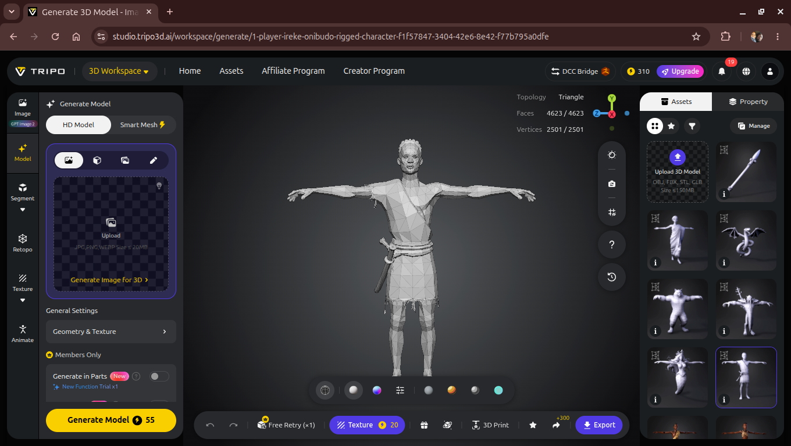
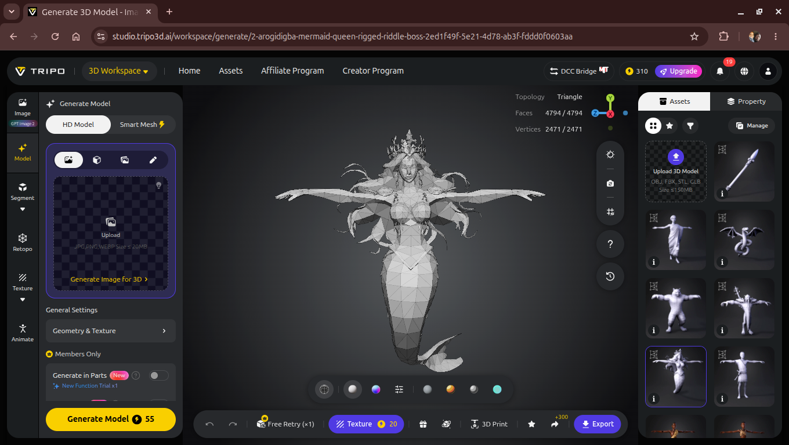
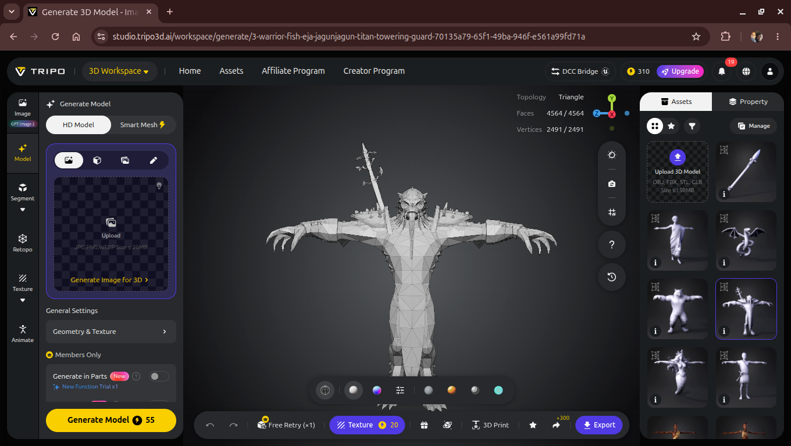
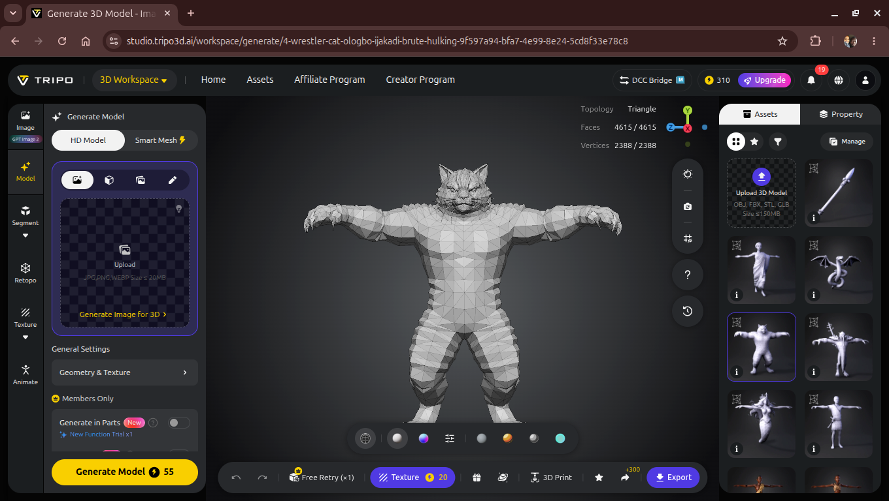
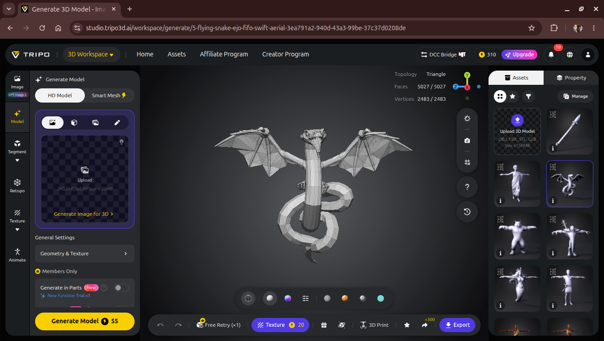
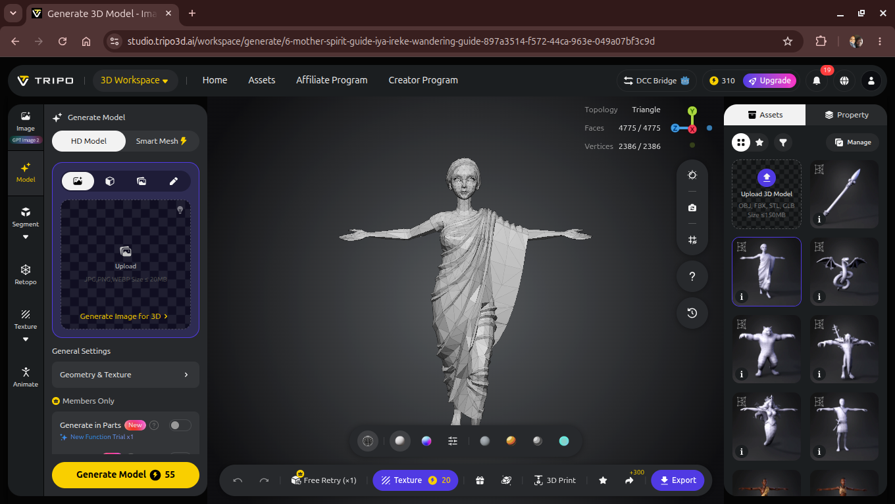
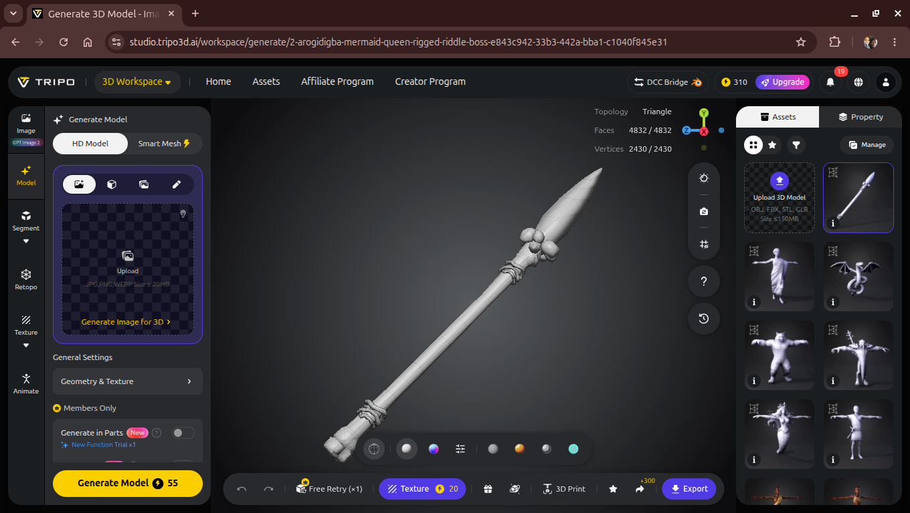

Part IV proved a Unity world-builder and an AI-generated-mesh pipeline could carry Akara-ogun's story into
3D. The real test of whether any of that was actually reusable, rather than just coincidentally tidy code,
was always going to be a second book. irekeonibudo-3d is that test: the same architecture,
pointed at Ìrèké Oníbùdó (1949) — a shipwrecked traveler swept into an undersea kingdom ruled by
the mermaid queen Arògìdígbà, guided through her trials by his dead mother's spirit. Four scripts carried
over unchanged. A few got reflavored. And this time, all seven AI-generated assets came back already
rigged.
Part IV's whole premise was that ogbojuode-3d was a new branch, not a replacement for the
Compose and LibGDX engines that came before it — a single Unity project proving the riddle-and-wisdom
structure could survive a jump into a walkable 3D space. What it didn't prove was whether that project's
architecture was actually portable, or just a well-organized one-off. irekeonibudo-3d
answers that by being the least original code in this entire series: a sibling repo, same engine, same
SceneSetupWizard pattern, pointed at a different Fagunwa book with a different geography —
river instead of forest, an undersea kingdom instead of a boss's lair, a mother's spirit instead of a
wandering ghommid.
That constraint was deliberate. If the shared scripts needed real surgery to fit a second story, the abstraction from Part IV wasn't real. If they mostly didn't, that's the actual result worth reporting.
Ireke Onibudo → Build Entire Universe is the same single menu command as Part IV's
SceneSetupWizard, assembling Ilu Eti-Odo (a riverside hub — huts, a dock, a
canoe, a shrine to Olókun lit like the old bonfire, a reed barrier at the water's edge) and
Ijoba Omi (the undersea kingdom — coral-reef stand-ins and glowing plankton, stretching
north from the hub exactly the way ogbojuode-3d's forest did), all from primitive geometry,
all in one click.
Four scripts made the trip completely unchanged: IDamageable.cs, WisdomTracker.cs,
and — more interestingly — CreatureAI.cs and RiddleGiver.cs, both of which had
already been quietly generalized during Part IV without a second story to prove it against yet.
Part IV's Agbako/Ijamba/Eru presets are the exact same three
stat blocks as this project's Titan/Brute/Swift roles — Eja
Jagunjagun (the towering warrior-fish) takes the Titan slot, Ologbo Ijakadi (the hulking wrestler-cat)
takes Brute, Ejo Fifo (the fast flying snake) takes Swift. Same numbers, same component, a role enum
instead of a name enum. That rename is the whole proof the abstraction held.
RiddleGiver.cs made the same trip unchanged for a related reason: it already called
OnRiddleFailed() via SendMessage instead of referencing
OstrichKingBoss directly, so wiring it to ArogidigbaBoss here needed no edits at
all — just a different component sitting on the receiving end.
IrekeOnibudoController.cs (was YorubaHunterController.cs) — thrown spear instead of a musket, a blade (Idà) instead of a machete, the Egbe teleport ability unchanged.ExpeditionManager.cs — hub-vs-kingdom framing in place of hub-vs-forest, boundary constant matched to this project's layout.PlayerVitals.cs — same charm-system stub, defeat message no longer hardcodes the other story's protagonist's name.ArogidigbaBoss.cs mirrors OstrichKingBoss.cs's pattern; MotherSpiritGuide.cs mirrors GhommidSpirit.cs's pattern.Part IV's riddle-and-wisdom loop was already a departure from pure combat. This project leans on it harder, because it's closer to what the source book is actually built around: not a monster gauntlet, but trials the mermaid queen sets up for a shipwrecked traveler to fail — survivable only with his dead mother's guidance. Arogidigba holds her ground and poses a trial exactly the way the Ostrich-King did; ignore her and she's harmless, fail her and she turns hostile. Three wandering visitations of Iya Ireke, Ireke Onibudo's mother's spirit, carry smaller trials of their own — his actual guide through the book's dangers, not a generic wandering NPC standing in for one.
"Cross my river three times, answer three times — or make your bed in Ijoba Omi forever."
— Arogidigba, riddle prompt in irekeonibudo-3dHuts, a dock, a canoe, a shrine to Olókun lit like a bonfire, a reed barrier facing the water.
Coral-reef stand-ins and glowing plankton, stretching north from the hub boundary — same layout logic as ogbojuode-3d's forest.
Ejo Fifo (swift, fragile) nearest the hub; Ologbo Ijakadi (brute) further in; Eja Jagunjagun (titan) deepest before the boss.
Trial encounters, not health bars — the loop's actual point, same as Part IV.
WisdomTracker and ExpeditionManager track state across the whole run.
RiddleGiver still auto-resolves as "correct" on interact — no answer-input screen in
either sibling project yet. Building that once, generically, and dropping it into both repos is next,
rather than solving it twice.
This project's own README started with an honest admission: "everything here is still primitive geometry." That's no longer true. All seven story-specific assets this prototype needs — six characters and the spear — have now gone through Tripo AI's Image-to-Model pipeline, the same workflow Part IV used for Akara-Ogun and the rest of that cast. The difference this time: every single one came back already rigged, in T-pose, ready for animation — a step Part IV's assets hadn't reached yet at the time of writing.







Same non-commercial license on free-tier outputs as Part IV, same reasoning for keeping generic props (dock planks, reeds, huts) sourced from CC0 libraries like Kenney and Poly Haven instead, reserving generation credits for the seven story-specific assets a library piece can't stand in for.
Nothing about running the same pipeline a second time settles the open question from Part IV — AI- generated 3D asset ownership and licensing is still shifting ground. Everything here is still treated as prototype-grade rather than shippable, with the same working assumption: final assets get regenerated on a paid tier with clear commercial terms, or replaced outright, before either sibling project ships.
Because so much of this codebase is now genuinely shared, most of what's outstanding is outstanding for
ogbojuode-3d and irekeonibudo-3d at the same time — solve it once, generically,
and both repos benefit.
RiddleGiver — one build serving both games.MobileTouchUI.cs is wired into both player controllers but hasn't been laid out on a Canvas or tested on a physical device.Five parts in, the thing actually being tested was never a rendering technology. Part I proved the riddle-and-wisdom structure could live inside Jetpack Compose. Parts II and III proved the same shape could be redrawn and re-ported without losing what made it worth building. Part IV proved it could survive a jump into a walkable 3D space it was never designed for, alongside a first honest look at what AI-generated meshes can and can't deliver. This part closes the loop the other direction: it proves that architecture wasn't a one-off — that the same world-builder, the same generalized creature AI, the same riddle-and-trial loop, transfer wholesale to an entirely different book, a different geography, a different cast, with real edits landing only where the two stories actually differ. Two full Unity projects now exist. Four story-agnostic scripts sit unchanged in both. Two complete sets of AI-generated, rigged character assets exist where six months ago there were none. The hunter still can't pass a spirit without answering a question first. The traveler can't cross Arogidigba's kingdom without one either. That throughline — not the engine, not the asset pipeline — is what five parts of this series were actually about.